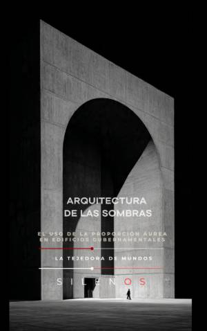

Illuminati
ARQUITECTURA DE LAS SOMBRAS : El uso de la proporción áurea en edificios gubernamentales modernos
Sinopsis
¿Es la arquitectura un simple contenedor de actividades humanas o una herramienta invisible de control y legitimidad? Arquitectura de las Sombras propone una tesis fascinante y perturbadora: la proporción áurea (el número Phi) no es solo un recurso estético, sino un alfabeto de autoridad que opera directamente sobre la fisiología y la psique del ciudadano. Descifra el Lenguaje Invisible del Poder Este libro invita a un recorrido crítico por las grandes explanadas, los umbrales monumentales y las cámaras de poder de la modernidad. A través de sus páginas, descubrirás cómo la geometría se transforma en rito y cómo el diseño urbano puede condicionar desde nuestro ritmo respiratorio hasta nuestra predisposición a la obediencia. Lo que encontrarás en este libro: El Alfabeto de Phi: Un análisis de cómo las cifras escriben legitimidad en piedra y hormigón, y por qué el cerebro humano responde de forma instintiva a ciertos patrones geométricos. La Estética del Poder: Una exploración de la jerarquía en el diseño institucional, donde la monumentalidad de los peldaños y la escala de los vacíos funcionan como mecanismos de percepción política. Neuroética y Espacio: Cómo la arquitectura incide en los circuitos límbicos, regulando estados emocionales como la calma, el asombro o la sumisión. Sombras y Vigilancia: El lado oculto del orden geométrico y la integración de la vigilancia en la armonía espacial. Hacia una Justicia Espacial: Un llamado a la responsabilidad ética de arquitectos y urbanistas para construir narrativas inclusivas y devolver "la tiza" del diseño a la ciudadanía. De la Geometría a la Democracia Desde las lecciones de Le Corbusier y su Modulor hasta los complejos gubernamentales contemporáneos, Arquitectura de las Sombras desvela las asimetrías de un lenguaje cifrado que suele estar reservado a las élites. Es una obra imprescindible para quienes deseen entender cómo el entorno construido moldea la voluntad pública y cómo podemos reclamar nuestro derecho a una ciudad más humana y transparente. Ideal para arquitectos, urbanistas, sociólogos, psicólogos ambientales y cualquier lector interesado en las estructuras invisibles que gobiernan nuestra vida colectiva.